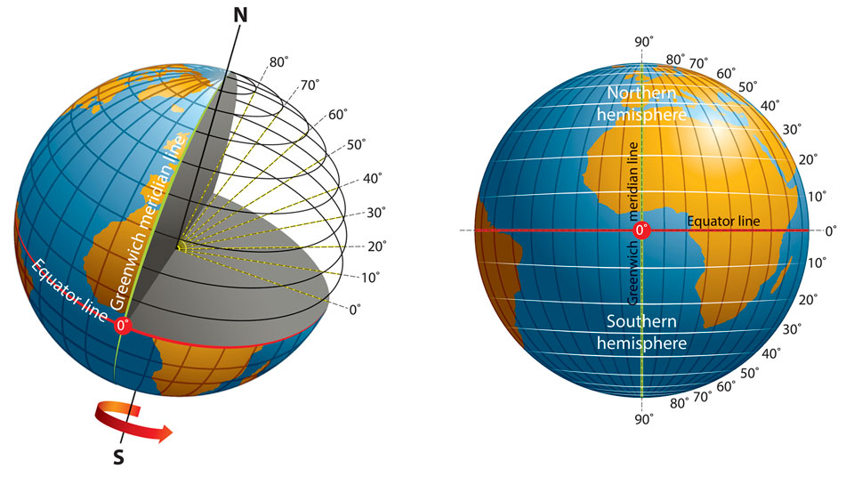
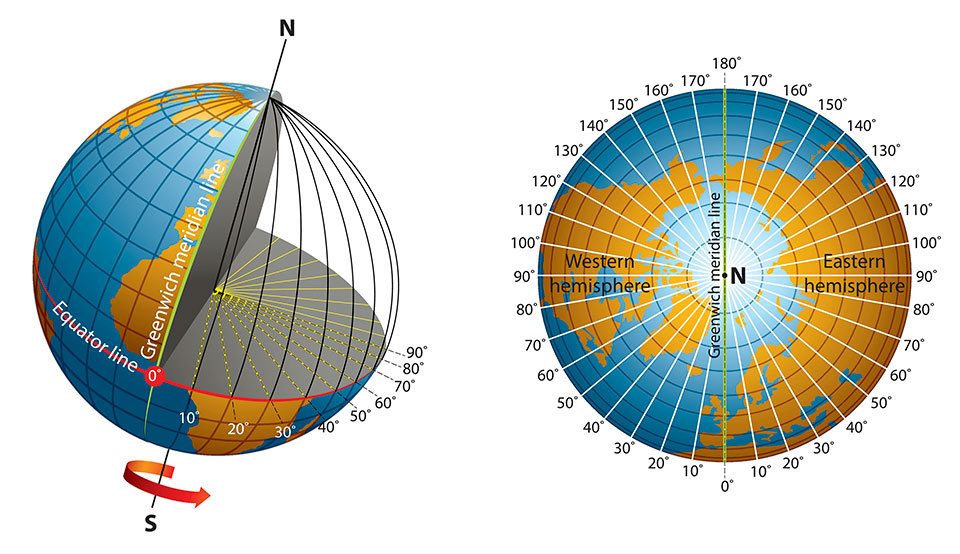
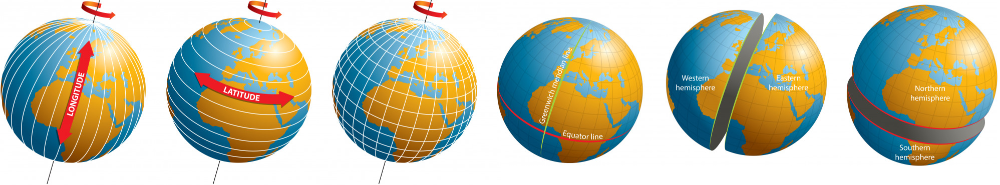
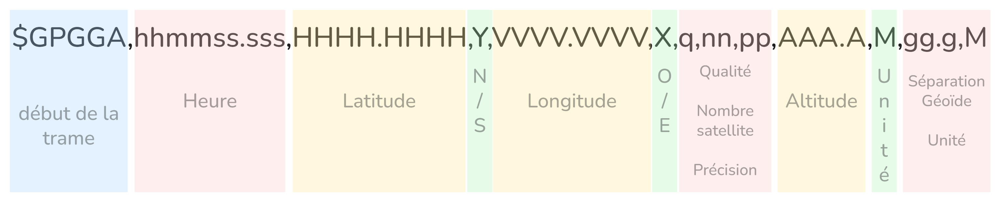

Coordonnées géographiques & protocole NMEA
Coordonnées géographiques
La position d'un point sur Terre est définie par deux angles, lus sur deux familles de cercles imaginaires tracés sur le globe.
Les parallèles et la latitude
Les parallèles sont des cercles horizontaux parallèles à l'équateur.
L'équateur est le parallèle de référence (0°).

On les numérote par leur latitude : l'angle entre le parallèle et l'équateur, mesuré depuis le centre de la Terre.
- de 0° (équateur) à +90° (pôle Nord)
- de 0° (équateur) à -90° (pôle Sud)
Plus on monte vers le Nord, plus la latitude augmente (valeurs positives).
Plus on descend vers le Sud, plus la latitude diminue (valeurs négatives).
Exemple : Rio se trouve environ à 22° au Sud.
Question 1 : À quel degré se situe Marrakech ?
Les méridiens et la longitude
Les méridiens sont des demi-cercles verticaux reliant les deux pôles. Le méridien de Greenwich (qui passe par Londres) est le méridien de référence (0°).

On les numérote par leur longitude : l'angle entre le méridien et celui de Greenwich, mesuré depuis le centre de la Terre.
- de 0° à +180° vers l'Est
- de 0° à -180° vers l'Ouest
Exemple : Rome se trouve environ à 12° à l'Est.
Question 2 : À quel degré se situe New York ?
Repérer un point
Un point sur Terre est repéré par le parallèle et le méridien qui se croisent en ce point :

Deux notations
1) La notation DMS (Degré Minute Seconde) est la notation traditionnelle, encore utilisée sur les cartes papier et les GPS de randonnée.
Comme pour les heures, les degrés peuvent être subdivisés en minutes et secondes :
- 1 degré = 60 minutes
- 1 minute = 60 secondes
Ce n'est pas du temps, c'est juste le même système de subdivision, appliqué aux angles.
| Notation | Exemple (Paris) |
|---|---|
| Degrés / minutes / secondes (DMS) | 48° 51' 24" N, 2° 21' 03" E |
| Degrés décimaux (DD) | 48.8567° N, 2.3508° E |
2) La notation DD (Degré Décimal) est la notation numérique, utilisée par les logiciels et les trames NMEA.
Formule de conversion DMS → DD :
On ramène tout en degrés :
\(DD = \text{degrés} + \frac{\text{minutes}}{60} + \frac{\text{secondes}}{3600}\)
Exemple :
\(48° \ 51' \ 24'' N = 48 + \frac{51}{60} + \frac{24}{3600} = 48{,}8567° N\)
On divise les minutes par 60 car 1 minute = 1/60 de degré, et les secondes par 3600 car 1 seconde = 1/3600 de degré.
Question 3 :
Rendez-vous un des sites suivants pour voir les paralléles et les méridiens : - arcgis - geoportail - map-tools
Avec l'aide du site, donner les coordonnées approximatives des villes suivantes :
- Osaka (Japon)
- Alger (Algérie)
- Montréal (Canada)
On se contentera de donner les degrés et des minutes approchées.
Indiquer quelle ville se trouve à ces coordonnées :
- 34° 36′ 29″ S 58° 22′ 13″ O
- 1° 17′ 00″ S 36° 49′ 00″ E
- 6° 10′ 31″ S 106° 49′ 37″ E
Par soucis de simplicité, on n'utilisera plus que les degrés et les minutes pour les prochaines questions.
Question 4 :
Convertir les coordonnées suivantes au format DD :
- 75° 40' N 2° 0' E
- 35° 30' N 127° 15' W
- 13° 12' S 73° 48' W
Le protocole NMEA 0183
Le protocole NMEA 0183 (National Marine Electronics Association) est le format standard utilisé par les récepteurs GPS pour transmettre les données de position à un ordinateur ou une application.
Les données sont transmises sous forme de trames — des lignes de texte commençant par $.
La trame $GPGGA
C'est la trame principale contenant la position. Sa structure :

Lire les coordonnées dans une trame NMEA
Dans une trame NMEA, les coordonnées ne sont pas en DMS classique — elles sont en degrés + minutes décimales.
Il n'y a pas de secondes.
La formule de conversion est donc simplifiée :
\(DD = \text{degrés} + \frac{\text{minutes décimales}}{60}\)
Comment séparer les degrés des minutes ?
- Latitude : les 2 premiers chiffres sont les degrés, le reste sont les minutes
- Longitude : les 3 premiers chiffres sont les degrés, le reste sont les minutes
La longitude va jusqu'à 180°, elle a donc besoin de 3 chiffres pour les degrés.
Exemple pas à pas :
Trame : $GPGGA,123519.00,4851.24,N,00221.03,E,...
Latitude : 4851.24 N
\(48° \ 51,24' → 48 + \frac{51,24}{60} = 48 + 0,854 = \textbf{48,854° N}\)
Longitude : 00221.03 E
\(2° \ 21,03' → 2 + \frac{21,03}{60} = 2 + 0,3505 = \textbf{2,3505° E}\)
Exemple de trame complète
$GPGGA,123519.00,4851.24,N,00221.03,E,1,08,0.9,545.4,M,46.9,M,,*47
Lecture :
- Heure : 12h 35min 19s UTC
- Latitude : 48° 51,24' N → 48,854° N
- Longitude : 2° 21,03' E → 2,3505° E
- 8 satellites
- Altitude : 545,4 m
Question 5a :
Décoder la trame suivante et identifier la ville correspondante sur arcgis :
$GPGGA,143022.00,4926.36,N,00105.95,E,1,07,1.1,21.0,M,47.6,M,,*XX
- Extraire la latitude et la longitude brutes
- Les convertir en DD
- Identifier la ville
Question 5b :
Décoder la trame suivante et identifier la ville correspondante :
$GPGGA,091504.00,4349.37,N,00519.83,E,1,09,0.8,12.5,M,47.2,M,,*XX
- Extraire la latitude et la longitude brutes
- Les convertir en DD
- Identifier la ville
Question 6 :
Sur arcgis, trouvez les coordonnées DD de la ville de votre choix (hors France).
Construire une trame NMEA fictive $GPGGA cohérente pour cette ville en remplissant les champs suivants (et expliquer les infos qu'elle contient) :
$GPGGA,HHMMSS.00,LLLL.LL,N,DDDDD.DD,E,1,08,1.0,XXX.X,M,47.0,M,,*XX
Pensez à bien respecter le format : 2 chiffres pour les degrés de latitude, 3 pour la longitude, et convertir les minutes décimales correctement.